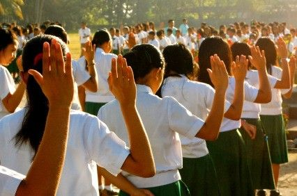
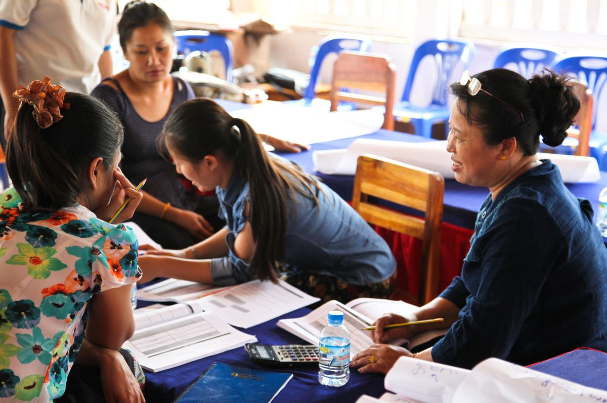

Yugto ng pamumuhay ng tao:
- Pangangaso at pangingisda
- Pagpapastol
- Pagtatanim
- Handicraft
- Panahong Industriyal
BANSANG PANGKAUNLARAN
- Kailangan ng mahabang panahon
- Estado ng bansa kung saan tinatamasa ng mga tao mula sa pinakamababang uri ng mamamayan ang nakakamanghang pagbabago sa ekonomiya at pamumuhay.
MGA KONSEPTO NG PAMBANSANG PANGKAUNLARAN
- Pagbabago
- Paraan upang maging iba o naiiba.
- Pag-unlad (Positive change and development-nararamdaman)
- Pagbabago mula sa mababa tungo sa mataas na antas ng pamumuhay.
- Pag angat, pagsulong, o paglago ng pangkalahatang aspeto ng buhay. (Bon at Bon)
- Isang progresibo at aktibong proseso at ang produkto nito ay ang pagsulong (Fajardo)
- Ang kaunlaran ay matatamo lamang kung mapauunlad ang yaman ng buhay kaysa sa yaman ng ekonomiya. (Amartya Sen)
ADDITIONAL:
- Ayon pa rin kay Fajardo ang pagsulong ay nakikita at nasusukat.
- Ang kaunlaran ay matatamo kung bibigyang pansin ang pagtanggal sa mga ugat ng kawalang kalayaan tulad ng kahirapan, diskriminasyon, at iba pa.
- Pagsulong (nakikita)
- Pagusad tungo sa layunin.
- Pagpapaunlad ng kakayahan, kaalaman, at abilidad upang makasabay sa agos ng buhay.
- Sa pana-panahon, naiiba ang sitwasyon at kalagayan kaya naman ang pagsulong ay kailangan upang makasabay sa agos ng buhay.
- Ayon sa United Nations Conference on Trade and Development (2012) ay mas malaki ang bilang ng dayuhang mamumuhunan sa papaunlad na bansa kaysa sa maunlad na bansa.
- Ebolusyon (Kailangan ng mahabang proseso)
- Pagbabago sa mga katangian sa loob ng mahabang panahon
- Anuman ang unang dumating ay mas mabuti sa sinundang panahon.
DALAWANG MAGKAIBANG KONSEPTO NG PAG-UNLAD (TODARO AT SMITH, 2012)
- TRADISYUNAL
- Binibigyang diin ang pag unlad bilang pagtatamo ng patuloy na pagtaas ng antas ng income per capita nang sa gayon ay mabilis na maparami ng bansa ang output kaysa sa bilis ng paglaki ng populasyon nito.
- MAKABAGO
- Ang pag unlad ay dapat na kumakatawan sa malawakang pagbabago sa buong sistemang panlipunan. Dapat na ituon ang pansin sa iba’t ibang pangangailangan at nagbabagong hangarin ng mga tao at grupo ng nasabing sistema.
SALIK SA PAGSULONG NG EKONOMIYA
- Likas na yaman
- Yamang tao
- Kapital
- Teknolohiya at Inobasyon
HDI (HUMAN DEVELOPMENT INDEX)
Pangkalahatang sukat ng kakayahan ng bansa na matugunan ang mahahalagang aspekto ng kaunlarang pantao: kalusugan, edukasyon, etc.
MAHBUB UL HAQ (Father of HDI)
- Akses sa edukasyon
- Maayos na serbisyong pangkalusugan
- Mas matatag na kabuhayan
- Kawalan ng karahasan at krimen
- Kasiya-siyang mga libangan
- Kalayaang pampulitika at pangkultura
- Pakikilahok sa mga gawaing panlipunan
MGA PALATANDAAN NG PAG-UNLAD:
- Makatwiran at dinamikong kaayusan ng panlipunan
- Kasaganaan at kasarinlan
- Kalayaan sa kahirapan, hanapbuhay para sa lahat, umaangat na istandard ng pamumuhay, at mainam na uri ng buhay para sa lahat
- Sapat na mga lingkurang panlipunan
- Katarungang panlipunan
MGA KATANGIAN NG ISANG MAG AARAL
- Makadiyos
- Mapamaraan
- Magalang
- Masipag
- Masunurin
- Respeto
- Tapat
- Matulungin
MGA GAMPANIN NG MAMAMAYAN SA PAG UNLAD NG BANSA:
- MAPANAGUTAN
- Tamang pagbabayad ng buwis
- Makialam
- MAABILIDAD
- Bumuo o sumali sa kooperatiba
- Pagnenegosyo
- MAALAM
- Tamang pagboto
- Pagpapatupad at pakikilahok sa mga proyektong pangkaunlaran sa komunidad
- MAKABANSA
- Pakikilahok sa pamamahala ng bansa (participative governance)
- Pagtangkilik sa mga produktong Pilipino
MGA TUNGKULIN SA PAG UNLAD NG BANSA:
- Suportahan ang ating pamahalaan.
- Sundin at igalang ang batas.
- Alagaan ang ating kapaligiran.
- Tumulong sa pagpuksa sa korapsyon at katiwalian sa pamahalaan.
- Maging produktibo.
- Tangkilikin ang mga produktong Pilipino.
- Magtipid ng enerhiya.
- Makilahok sa mga gawaing pansibiko.

